EverWind 기능 설명 이미지 보관함
이미지 보관본 · 포트폴리오 본문 미적용
픽셀 캐릭터를 사용한 구현 설명용 개념 그림입니다. 그림을 누르면 원본 크기로 열립니다.
Core Features
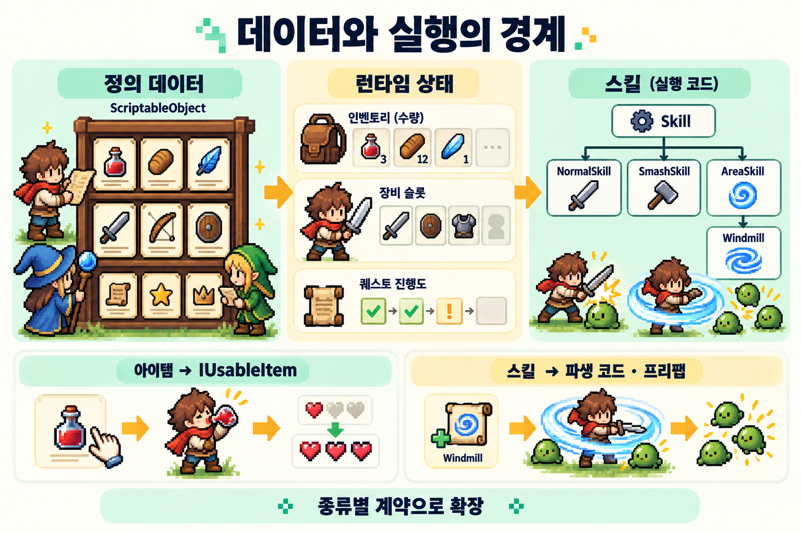
01. 데이터 중심 RPG 콘텐츠 확장
core-features/01-content-extension.png구현 근거 파일
- Assets/Scripts/Item
- Assets/Scripts/Skill
- Assets/Scripts/Quest
- Assets/Scripts/Tutorial
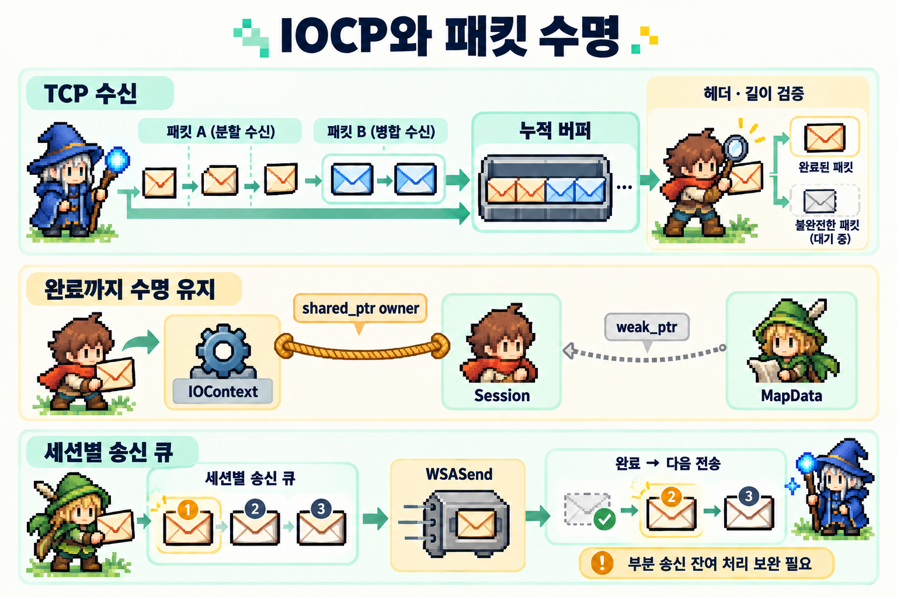
02. IOCP 비동기 세션과 패킷 수명주기
core-features/02-iocp-packet-lifetime.png구현 근거 파일
- EverWindServer/LoginServer/Network/Session.h
- EverWindServer/LoginServer/Network/Session.cpp
- EverWindServer/LoginServer/MapData.h
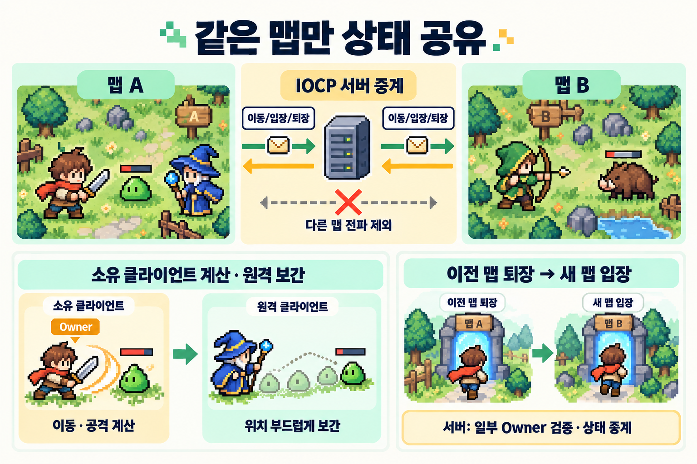
03. 맵 단위 멀티플레이 동기화
core-features/03-map-multiplayer.png구현 근거 파일
- EverWindServer/LoginServer/MapData.cpp
- EverWindServer/LoginServer/MapDataManager.cpp
- Assets/Scripts/Server/OtherPlayer
- Assets/Scripts/Enemy/EnemyNetworkSync.cs
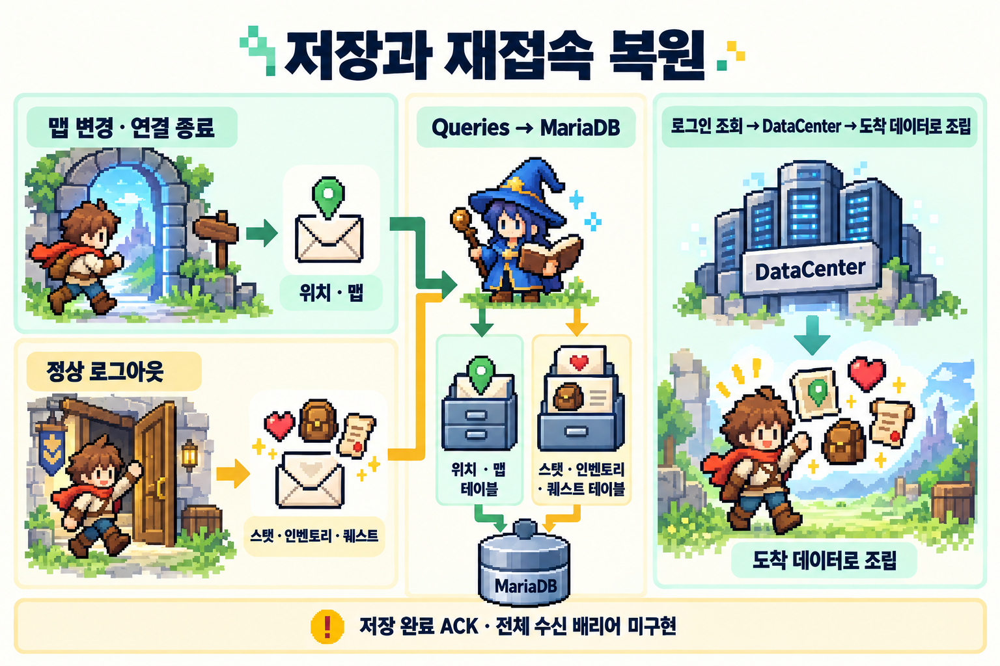
04. 재접속 가능한 게임 상태 영속화
core-features/04-persistence.png구현 근거 파일
- Assets/Scripts/Server/NetworkClient.cs
- EverWindServer/LoginServer/Network/Session.cpp
- EverWindServer/LoginServer/DB/Queries.cpp
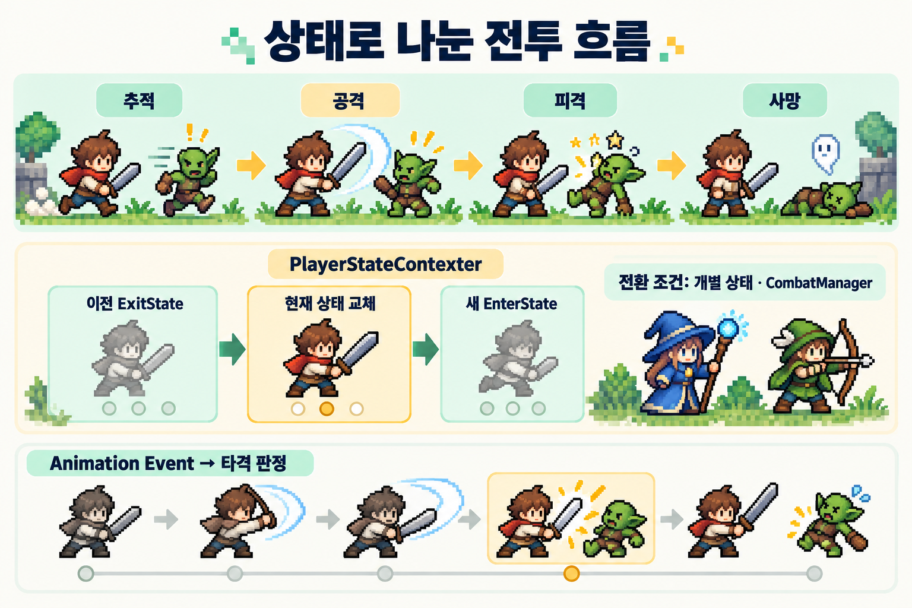
05. 상태 머신 기반 전투 흐름
core-features/05-combat-state-flow.png구현 근거 파일
- Assets/Scripts/States/PlayerStateContexter.cs
- Assets/Scripts/Skill/CombatManager.cs
- Assets/Scripts/States/AttackState.cs
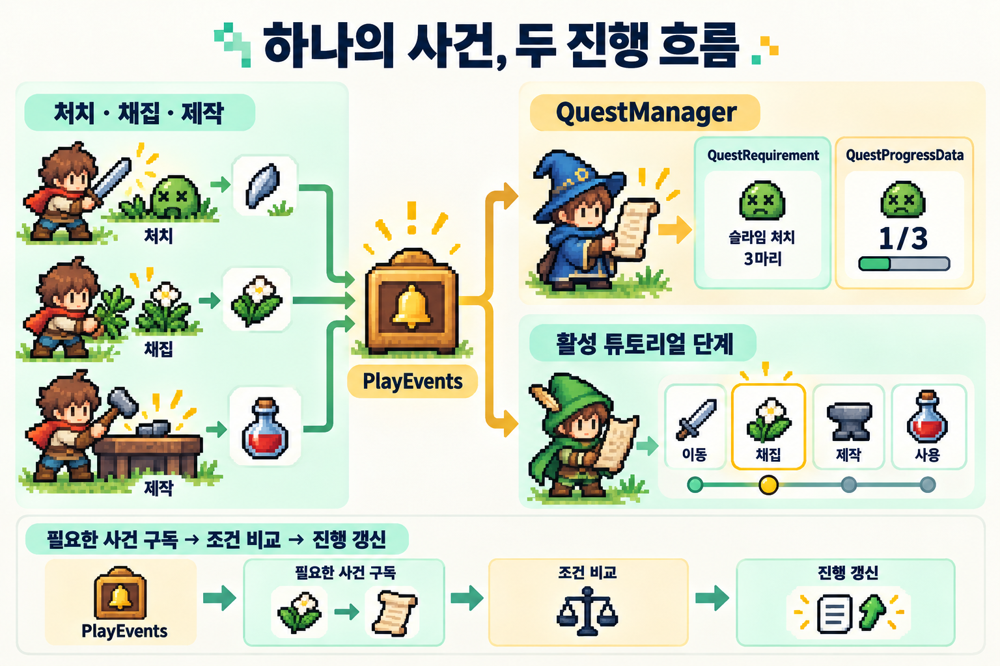
06. 이벤트 기반 퀘스트·튜토리얼
core-features/06-quest-tutorial-events.png구현 근거 파일
- Assets/Scripts/PlayEvents.cs
- Assets/Scripts/Quest/QuestManager.cs
- Assets/Scripts/Tutorial
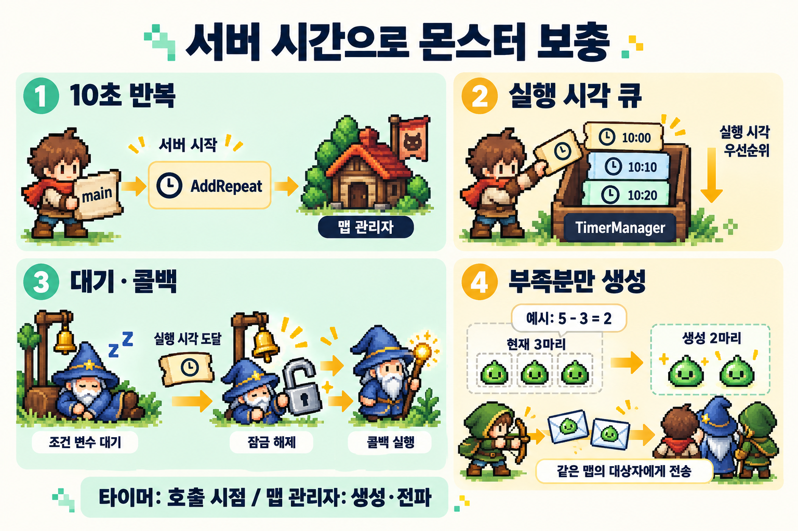
07. 서버 타이머와 맵별 몬스터 보충
core-features/07-server-timer-refill.png구현 근거 파일
- EverWindServer/LoginServer/TimerManager.cpp
- EverWindServer/LoginServer/Timer.cpp
- EverWindServer/LoginServer/main.cpp
- EverWindServer/LoginServer/MapDataManager.cpp
Troubleshooting
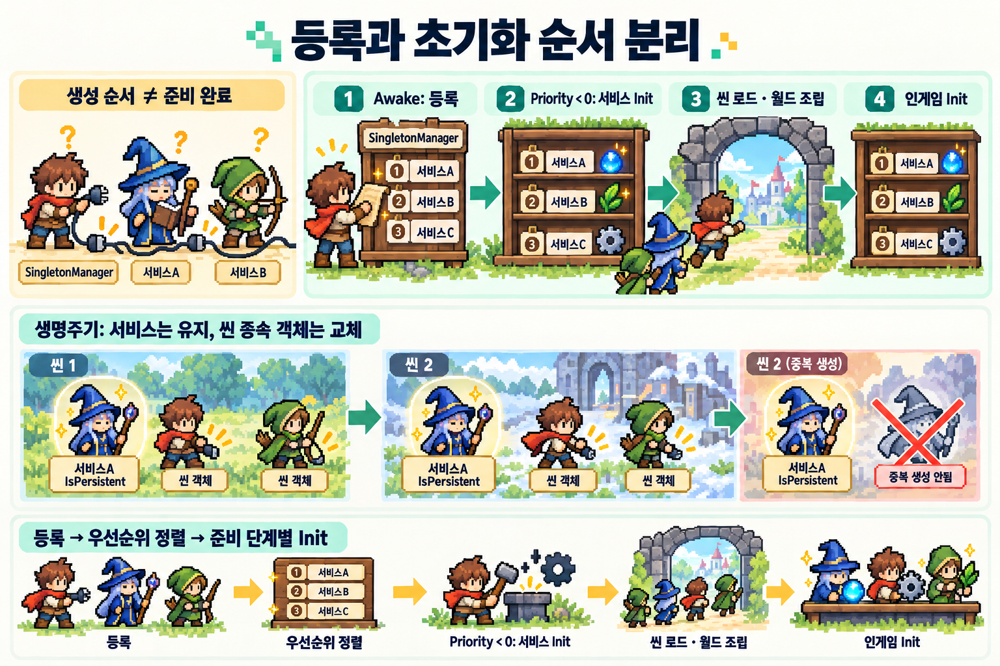
01. 싱글톤 매니저의 초기화 순서와 씬 수명 분리
troubleshooting/01-singleton-initialization.png구현 근거 파일
- Assets/Scripts/SingletonManager.cs
- Assets/Scripts/SingletonBase.cs
- Assets/Scripts/Server/Loader/SceneLoader.cs
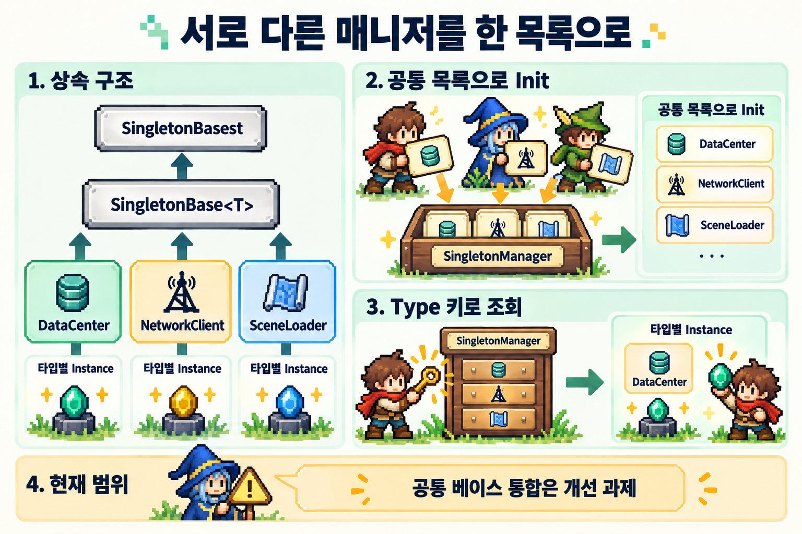
02. 싱글톤 공통 베이스로 서로 다른 매니저 묶기
troubleshooting/02-singleton-common-base.png구현 근거 파일
- Assets/Scripts/SingletonBasest.cs
- Assets/Scripts/SingletonBase.cs
- Assets/Scripts/SingletonManager.cs
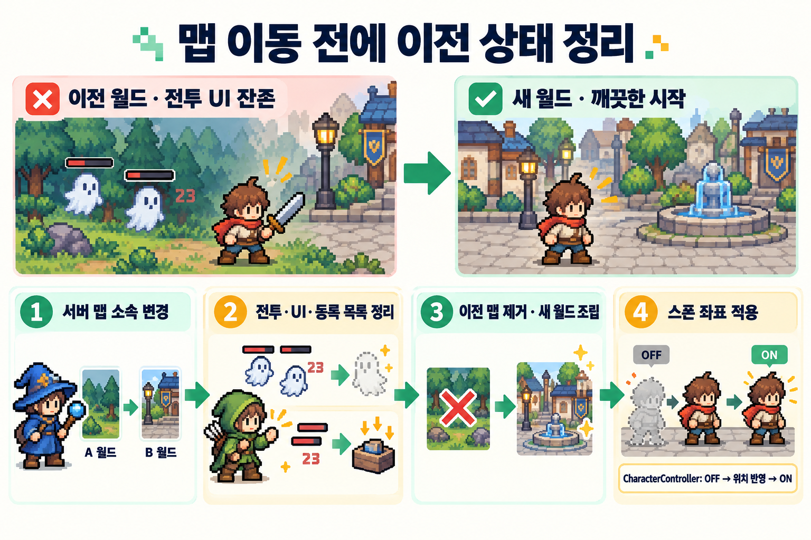
03. 맵 전환 후 이전 월드 상태가 남는 문제
troubleshooting/03-world-transition-cleanup.png구현 근거 파일
- Assets/Scripts/Server/Loader/WorldLoader.cs
- Assets/Scripts/UI/DisplayUI/EnemyHpUIManager.cs
- EverWindServer/LoginServer/MapDataManager.cpp
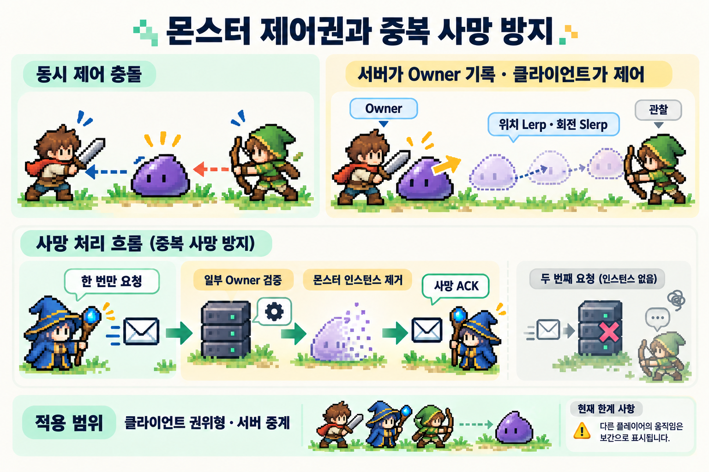
04. 몬스터 제어권과 사망 요청 충돌
troubleshooting/04-monster-ownership.png구현 근거 파일
- Assets/Scripts/Enemy/EnemyNetworkSync.cs
- EverWindServer/LoginServer/Logic/PacketMethod.cpp
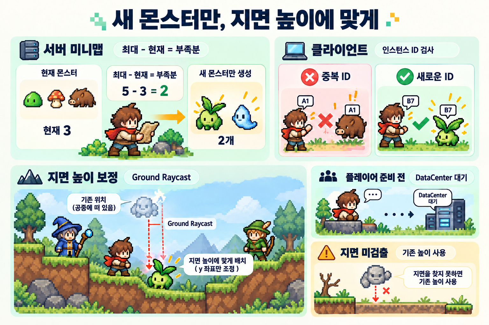
05. 몬스터 리필 시 중복 생성과 지형 이탈
troubleshooting/05-refill-ground-height.png구현 근거 파일
- EverWindServer/LoginServer/MapData.cpp
- EverWindServer/LoginServer/MapDataManager.cpp
- Assets/Scripts/Server/Loader/WorldLoader.cs
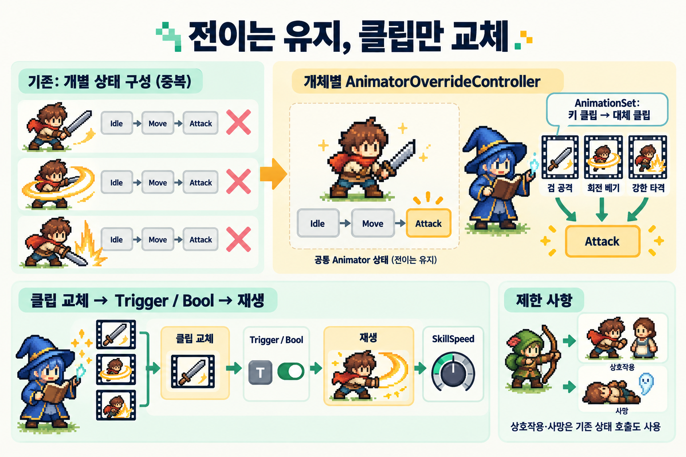
06. Animator 상태 증가와 클립 교체의 분리
troubleshooting/06-animator-overrides.png구현 근거 파일
- Assets/Scripts/States/AnimationContexter.cs
- Assets/Scripts/States/AnimationSet.cs
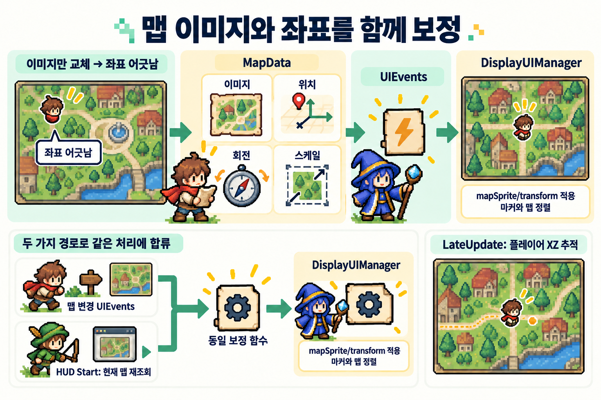
07. 맵 전환 후 미니맵 좌표가 어긋나는 문제
troubleshooting/07-minimap-alignment.png구현 근거 파일
- Assets/Scripts/Server/Loader/WorldLoader.cs
- Assets/Scripts/UI/DisplayUI/DisplayUIManager.cs
Other Functions
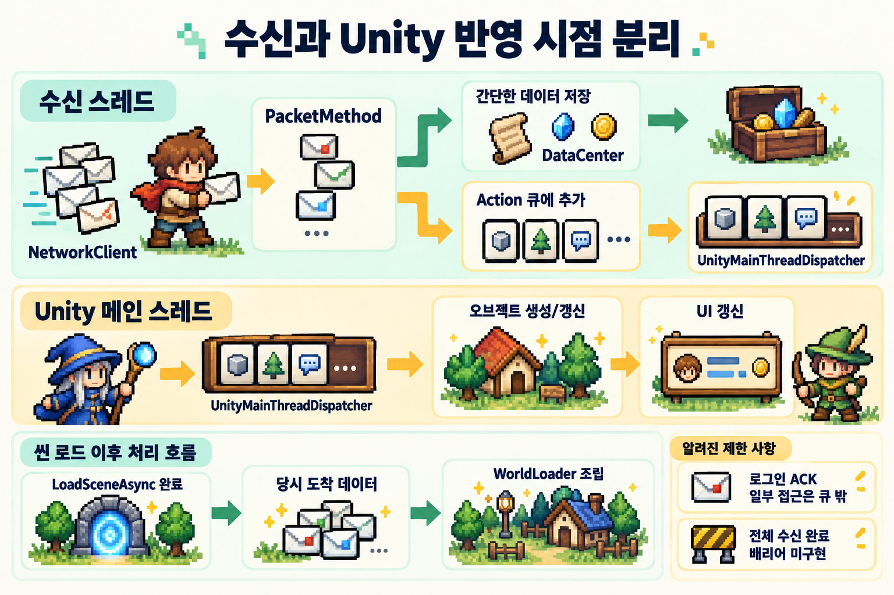
01. Unity 메인 스레드와 지연 데이터 조립
other-functions/01-main-thread-assembly.png구현 근거 파일
- Assets/Scripts/Server/NetworkClient.cs
- Assets/Scripts/Server/PacketMethod.cs
- Assets/Scripts/Server/UnityMainThreadDispatcher.cs
- Assets/Scripts/Server/Loader/SceneLoader.cs
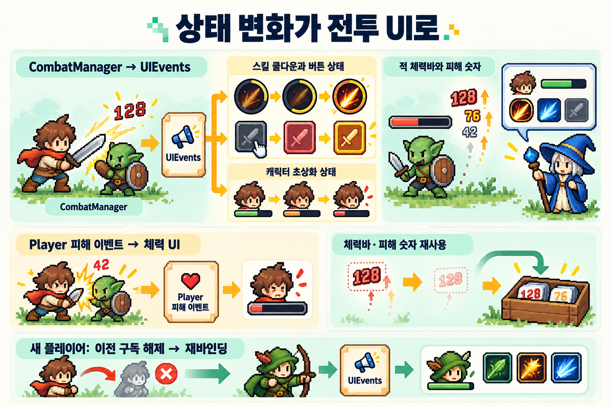
02. UI 이벤트와 HUD·전투 피드백
other-functions/02-hud-combat-feedback.png구현 근거 파일
- Assets/Scripts/UI/DisplayUI/DisplayUIManager.cs
- Assets/Scripts/UI/DisplayUI/EnemyHpUIManager.cs
- Assets/Scripts/UI/UIEvents.cs
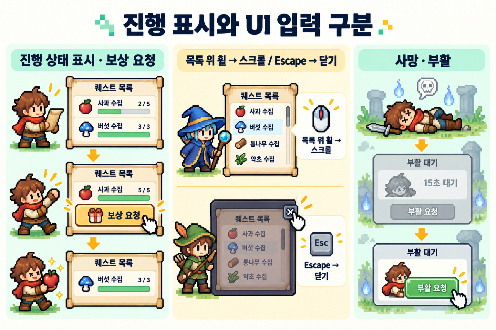
03. 퀘스트 목록·팝업 입력·사망 UI
other-functions/03-quest-popup-death-ui.png구현 근거 파일
- Assets/Scripts/UI/QuestUI/QuestUI.cs
- Assets/Scripts/UI/QuestUI/QuestContentUI.cs
- Assets/Scripts/UI/PopUpUIManager.cs
- Assets/Scripts/UI/DeadUI.cs
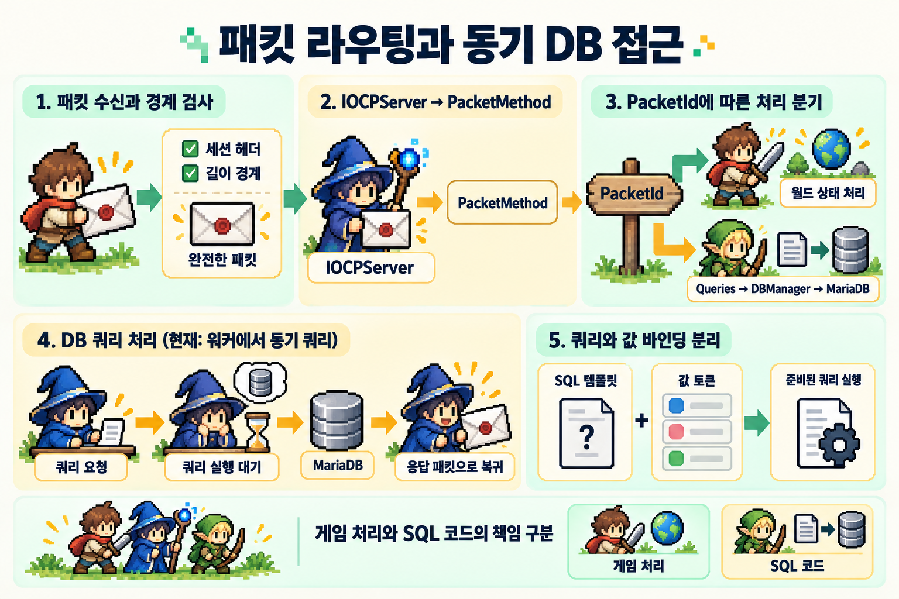
04. 패킷 라우팅과 DB 접근 경계
other-functions/04-routing-db-boundary.png구현 근거 파일
- EverWindServer/LoginServer/Network/Session.cpp
- EverWindServer/LoginServer/Network/IOCPServer.cpp
- EverWindServer/LoginServer/Logic/PacketMethod.cpp
- EverWindServer/LoginServer/DB/Queries.cpp
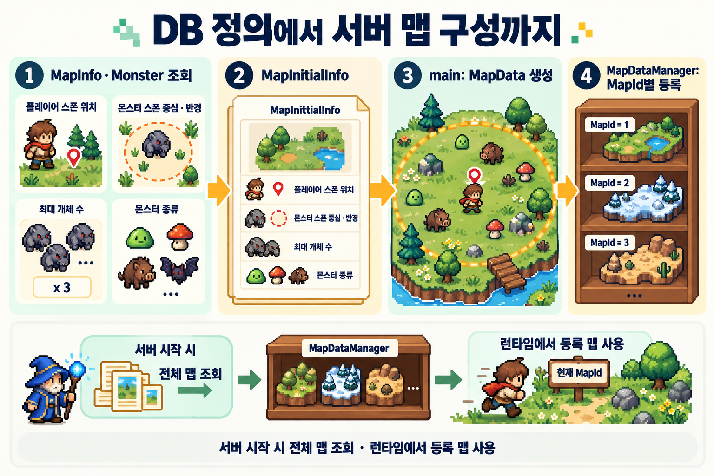
05. 맵·몬스터 스폰 기준
other-functions/05-map-spawn-definitions.png구현 근거 파일
- EverWindServer/LoginServer/DB/Queries.cpp
- EverWindServer/LoginServer/main.cpp
- EverWindServer/LoginServer/MapData.cpp
- EverWindServer/LoginServer/MapDataManager.cpp